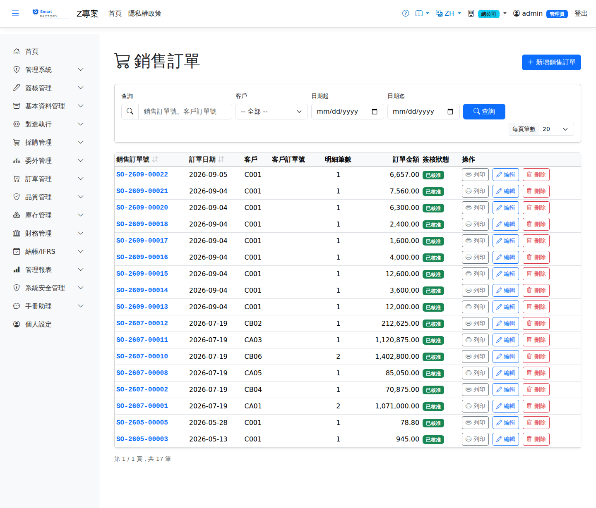

銷售訂單Sales Order
路由：/SalesOrder | 客戶訂單建立與需求驅動Route: /SalesOrder | Customer order entry and demand generation
承接客戶訂單：品號、數量、交期、幣別價格（交易日匯率快照）。核准後即為 MRP 需求來源，行別追蹤已出貨量。訂單修改受管制：已投產的關聯工單會鎖定並警示，減量時未投產部分自動釋放預留。Captures a customer order: product, quantity, delivery date and price in the transaction currency (with the rate snapshotted on the transaction date). Once approved it becomes a demand source for MRP, and each line tracks the shipped quantity. Order changes are controlled: linked work orders already released are locked and warned about, and reducing the quantity releases the reservation of whatever is not yet released.

銷售訂單畫面截圖（示意，實際欄位/資料依權限與查詢條件而異）Sales order screenshot (illustrative; actual fields and data vary by permission and query criteria)
查詢Search
1
查詢列輸入條件後點「查詢」；欄位標題可點擊排序，清單下方有分頁導航。Enter your criteria on the query bar and click "Search"; column headers can be clicked to sort, and the paging controls sit below the list.
單據狀態Status
| 狀態Status | 說明Guide |
|---|---|
| 草稿 DraftDraft | 已建立未生效，可自由編輯、刪除；需簽核者於此狀態送審。Created but not yet effective; can be freely edited or deleted, and submitted for approval from this status. |
| 待審核Pending approval | 已送審等待簽核，不可編輯；可撤回改回草稿。Submitted and waiting for approval; it cannot be edited, but it can be withdrawn back to draft. |
| 已確認 ConfirmedConfirmed | 簽核核准（或免簽核直接確認）後生效，等待後續作業/過帳。Effective once approved (or confirmed directly when no approval is required), waiting for the next step or for posting. |
| 已過帳 PostedPosted | 庫存/帳務已入帳，單據不可再修改。Stock and accounting have been posted; the document can no longer be changed. |
| 已作廢 VoidVoid | 反向沖銷已過帳內容；作廢原因需留存，不可復原。Reverses what was posted; the void reason is kept and the action cannot be undone. |
作業流程Process
建立銷售訂單Creating a sales order
1
點「新增」開啟側欄，填寫銷售訂單表頭與明細行後儲存（草稿）。Click "Add" to open the panel, fill in the sales order header and lines, then save (as a draft).
2
點「送審」進入簽核流程；核准後單據自動轉「已確認」。若免簽核，直接點「確認」。Click "Submit" to start the approval flow; the document turns to "Confirmed" once approved. Where no approval is required, click "Confirm" directly.
後續作業Follow-up actions
1
已確認/已過帳單據可點「列印」產生含 QR Code 的正式表單（新分頁開啟）。Confirmed and posted documents can be printed with "Print", producing the official form with a QR code in a new tab.
2
已過帳單據如需沖銷，點「作廢」並填寫原因；系統產生反向庫存/帳務異動。To reverse a posted document, click "Void" and enter a reason; the system creates the reversing stock and accounting entries.
欄位說明Field reference
表頭Header
| 欄位Field | 說明Guide |
|---|---|
| 訂單單號Order No. | 系統採番，不可修改Numbered by the system; not editable |
| 訂單日期Order Date | 必填Required 接單日期Order date |
| 訂單類型Order Type | 必填Required 一般訂單、預測訂單等，影響 MRP 是否納入展開Normal order, forecast order and so on, which decides whether MRP includes it |
| 客戶Customer | 必填Required 下單客戶；選定後帶出該客戶的幣別、稅別與交易條件預設值Customer placing the order; selecting one brings in its currency, tax code and trading terms as defaults |
| 客戶訂單號Customer Order No | 客戶方的採購單號，供雙方對帳The customer's own order number, for reconciliation between both parties |
| 貿易條件Trade Term (Incoterms) | 外銷訂單才需要填。它決定運費與保險由誰負擔，以及風險移轉時點——也就是收入認列的時點。⚠️ 與採購不同：出口的運費保險不計入存貨成本（貨正在離開），而是列為營業費用或收入的減項，因此不走「進料費用分攤」。Only needed for export orders. It decides who bears freight and insurance and when risk transfers — which is also when revenue is recognised. ⚠️ Unlike purchasing: outbound freight and insurance are not capitalised into inventory (the goods are leaving); they are an operating expense or a deduction from revenue, so they do not go through Landed Cost Allocation. |
| 備註Notes | 整張訂單的補充說明Notes for the whole order |
明細Lines
| 欄位Field | 說明Guide |
|---|---|
| 品號Item | 必填Required 銷售的料件Item sold |
| 預交日期Delivery Date | 必填Required 該行承諾的交貨日；MRP 以此倒推需求日，逾期報表也以此判定Delivery date promised for the line; MRP derives the demand date from it and the overdue report measures against it |
| 訂購數量 / 單位Order Qty / UOM | 必填Required 客戶下單的數量與銷售計量單位；與庫存單位不同時系統另存庫存單位換算量。選了品號後，單位只列該品號可用的單位（預設銷售單位）。Quantity and sales unit of measure ordered by the customer; when it differs from the stock unit, the converted stock quantity is stored as well. Once a product is chosen, the unit list shows only the units usable for it (sales unit preselected). |
| 幣別Currency | 該行的交易幣別；本幣金額依單據匯率換算而得Transaction currency of the line; the local amount is converted with the document rate |
| 單價Unit Price | 交易幣別的未稅單價，小數位數依幣別設定Price before tax in the transaction currency; decimal places follow the currency setting |
| 稅別Tax | 稅別代碼，決定稅率；改稅別會重算稅額Tax code, which determines the rate; changing it recalculates the tax |
| 未稅金額Line Amt | 數量 × 單價Quantity × unit price |
| 稅額Tax | 未稅金額 × 稅率Amount before tax × tax rate |
| 含稅總額Total | 未稅金額 ＋ 稅額，仍為Amount before tax + tax, still in 交易幣別Currency |
| 本幣金額Local Amount | 含稅總額換算為本位幣的金額（本幣＝外幣 × 匯率）；表頭合計與帳務入帳一律採本幣The tax-inclusive total converted to local currency (local = foreign × rate); header totals and accounting entries always use local currency |
| 已出貨量Shipped Qty | 該行累計已出貨的數量，由出貨單回寫，不可手動修改Cumulative quantity shipped for the line, written back by shipments and not editable by hand |
| 結案Close | 勾選後該行不再等待出貨（如客戶取消尾數）；未結案且未出完者會出現在訂單逾期追蹤Once checked, the line no longer waits for shipment (for example when the customer cancels the balance); open lines that are not fully shipped appear in overdue order tracking |
| 備註Notes | 該明細行的個別說明Notes for this individual line |
相關畫面Related screens
出貨單Goods Shipment、MRP 執行MRP Run、訂單變更決策Order Change Decision
注意：Note:修改已投產訂單數量會進入「訂單變更決策」流程，請與生管協調後執行。 Changing the quantity of an order already in production enters the "Order Change Decision" flow; coordinate with production control first.